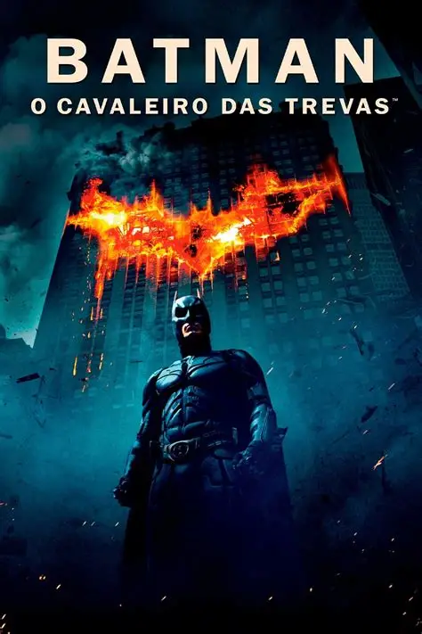

Quando o Batman surge na escuridão, os criminosos não enxergam apenas um homem mascarado, mas enxergam a certeza de que nenhum esconderijo, arma ou coragem será suficiente para salvá-los.
Batman: O Cavaleiro das Trevas

Imagens